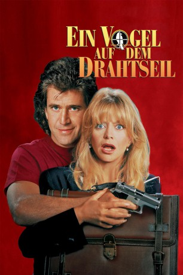
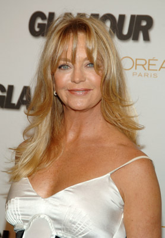
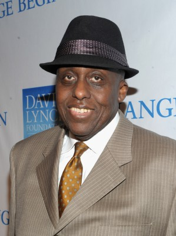
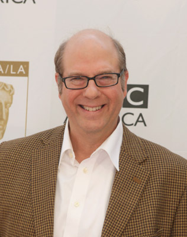
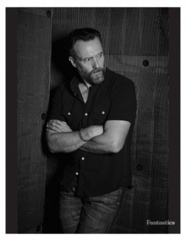
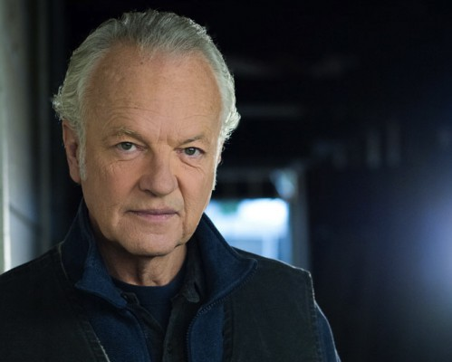
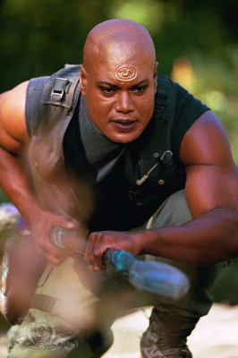
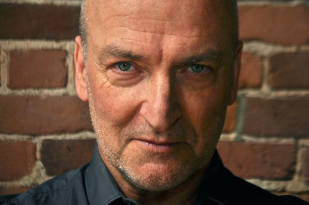
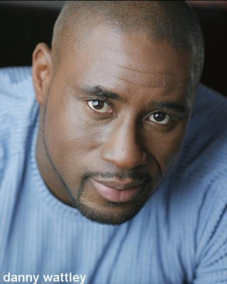
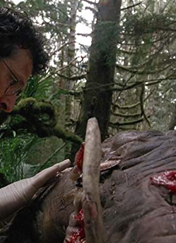

#5301 Ein Vogel auf dem Drahtseil
Alternativ: Bird on a Wire
 
 IMDB-Wertung: 5.9 / 10
IMDB-Wertung: 5.9 / 10  Metascore: 0
Metascore: 0 
Mit seiner Aussage gegen zwei Rauschgift-Gangster gewinnt Kronzeuge Rick Jarmin zwei Feinde fürs Leben. Trotz ständig wechselnder Identität spüren die Killer ihn wieder auf, als sie nach 15 Jahren aus dem Knast entlassen werden. Zufällig wird Rick zur gleichen Zeit von seiner ehemaligen Geliebten wiedererkannt, die er Knall auf Fall verlassen hat. Sie ist noch immer stinksauer auf ihn, aber die irrwitzige Verfolgungsjagd quer durch die USA, die sie sich mit den Killern liefern, verhindert die Rache – vorerst.
Jahr: 1990
Dauer: 105 Minuten
FSK: 12
Land: USA Studio: Universal PicturesTonspuren: DD5.1 - ,
Untertitel:
Auflösung: 1080p (1920x816) Größe: 14131 MB
Genre: Action, Komödie
Regisseur: John Badham
Drehbuch: Brian Tucker
Soundtrack:
Darsteller:
 Mel Gibson als Rick Jarmin
Mel Gibson als Rick Jarmin-  Goldie Hawn als Marianne Graves
 David Carradine als Eugene Sorenson
David Carradine als Eugene Sorenson-  Bill Duke als Albert Diggs
-  Stephen Tobolowsky als Joe Weyburn
- Joan Severance als Rachel Varney
 Jeff Corey als Lou Baird
Jeff Corey als Lou Baird- Alex Bruhanski als Raun
-  John Pyper-Ferguson als Jamie
 Clyde Kusatsu als Mr. Takawaki
Clyde Kusatsu als Mr. Takawaki- Lossen Chambers als Lossen
- Lesley Ewen als Night Receptionist
-  Kevin McNulty als Brad
 Blu Mankuma als Plainclothesman
Blu Mankuma als Plainclothesman-  Christopher Judge als Cop at Cafe
 Paul Jarrett als Carl Laemmle
Paul Jarrett als Carl Laemmle-  James Kidnie als Underworld Boss
-  Danny Wattley als Cement Worker
- Harry Caesar als Marvin
- Jackson Davies als Paul Bernard
- Florence Paterson als Molly Baird
- Tim Healy als Paul
- Wes Tritter als Scottie
- Ken Camroux-Taylor als Neff
- Wendy Van Riesen als Secretary
- Robert Metcalfe als Dex
- Robert Thurston als Bank Teller
- Brian Torpe als Bank Vice President
- Oscar Goncalves als Bank Guard
- Tim Price als Beggar
- Oscar Ramos als Cop at Fire
- Dan Zale als Fireman
- Jon Garber als Nikita Knatz
-  Kim Kondrashoff als Guard at Gate
- Michel Barbe als Maitre d'
- Maria Leone als Sales Clerk
Datei: X:\1990\Vogel auf dem Drahtseil, Ein (1990, FSK12, 1920x816).mkv seit 11.01.2017
Festplatte: HD 1987-1991
 Es gibt insgesamt 52 Filme in der Gruppe '1990'
Es gibt insgesamt 52 Filme in der Gruppe '1990'